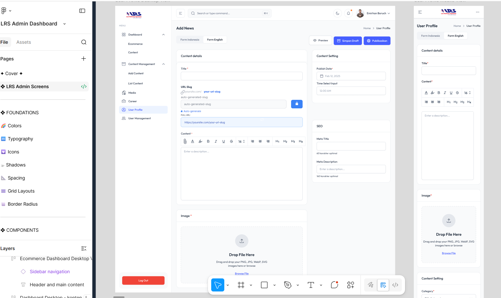
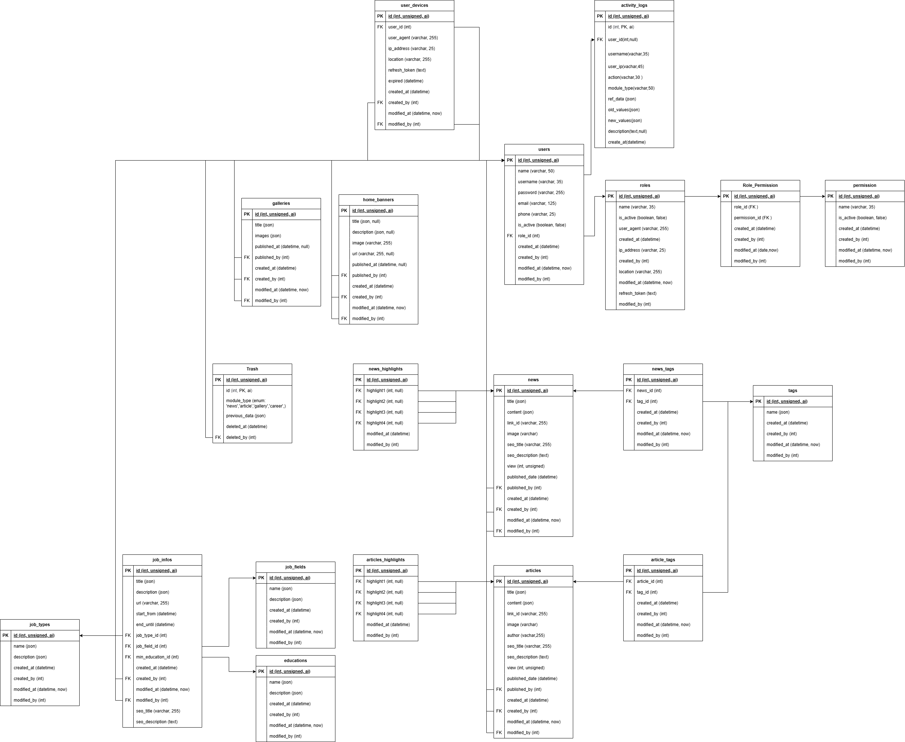
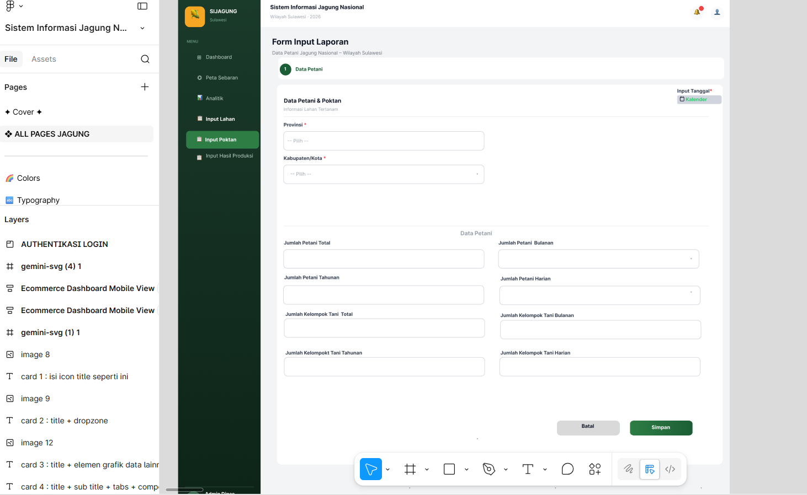
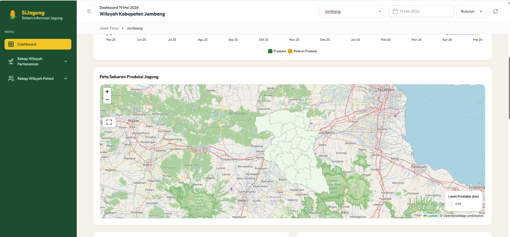
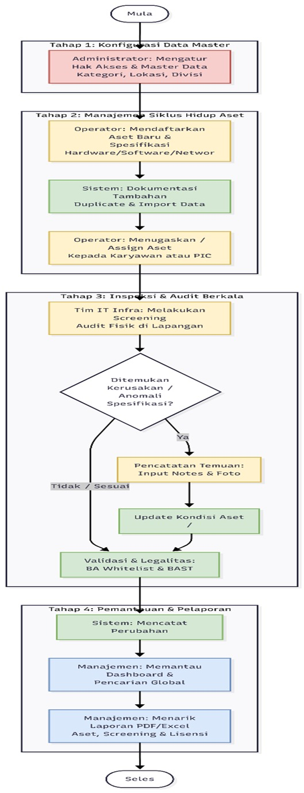

Pengalaman Kerja
Business & System Analyst
Nov 2025 - Mei 2026PT Len Railway Systems
- Melakukan analisis kebutuhan sistem melalui wawancara langsung secara komprehensif dengan pihak stakeholder.
- Menentukan spesifikasi integrasi data, termasuk metode HTTP (GET, POST, PUT, PATCH, DELETE) dalam arsitektur API sistem.
- Membuat rancangan interaktif mockup UI/UX menggunakan Figma sebagai acuan baku bagi tim pengembang.
- Mengolah serta memvisualisasikan data spasial (GIS) untuk kebutuhan fitur pemetaan dinamis pada aplikasi perkeretaapian.
Staff GIS & IT Support (Magang)
Feb 2022 - Agu 2022Yayasan Al-A'laa Bogor
- Melakukan pengukuran langsung lapangan serta mengolah pemetaan lahan aset milik yayasan menggunakan software QGIS.
- Menghasilkan output berupa peta topografi digital resmi yang valid sebagai landasan pengajuan SHM tanah yayasan.
- Menangani manajemen infrastruktur IT harian termasuk troubleshooting printer, jaringan WiFi, dan perawatan komputer operasional.
Studi Kasus Proyek
1. Website LRS Admin Dashboard
Merancang sistem manajemen internal dan dashboard admin untuk monitoring sistem persinyalan. Bertanggung jawab penuh menyusun diagram alur kerja teknis serta pemetaan database relasional.


Analisis & API
Menyusun spesifikasi API terstruktur (HTTP Methods) serta merancang alur logika data menggunakan DFD.
Database Design
Menghasilkan arsitektur ERD kompleks yang dinormalisasi untuk menjaga integritas data transaksi.
2. SiJagung - Sistem Informasi Jagung Nasional
Aplikasi monitoring berbasis spasial untuk memetakan sebaran wilayah komoditas produksi jagung di seluruh Indonesia guna mendukung akurasi kebijakan ketahanan pangan pemerintah.


GIS & Spatial Process
Mengolah data spasial mentah hingga menghasilkan keluaran format GeoJSON siap pakai yang diintegrasikan langsung ke Web App peta interaktif.
Requirements & Wireframe
Menggali kebutuhan fungsional dari kelompok tani (Poktan) serta mendesain UI Form Input Laporan yang ramah pengguna.
3. Aplikasi Manajemen Aset IT Internal Perusahaan
Solusi digital tata kelola siklus hidup perangkat keras & perangkat lunak internal. Berfokus pada kemudahan verifikasi fisik dan audit berkala inventaris kantor.

Cakupan Rekayasa Proses Bisnis (To-Be) yang Dirancang:
Berhasil menyusun dokumen **SRS (Software Requirements Specification)** yang komprehensif, memangkas *miscommunication* antara manajemen dan pengembang hingga 100% pada fase awal logika pemindaian data aset.